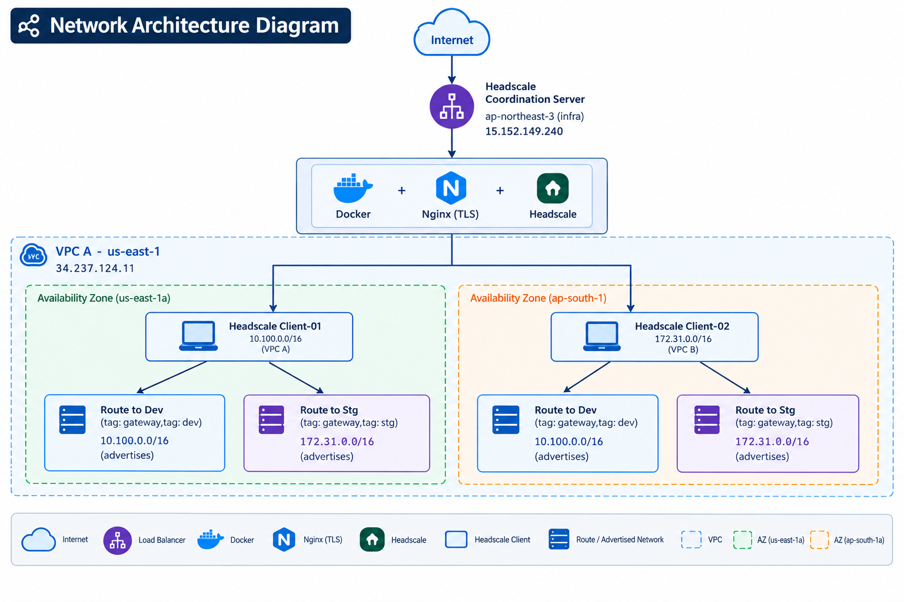
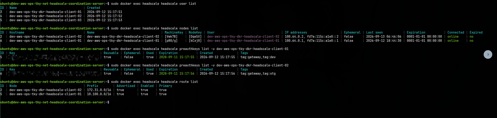
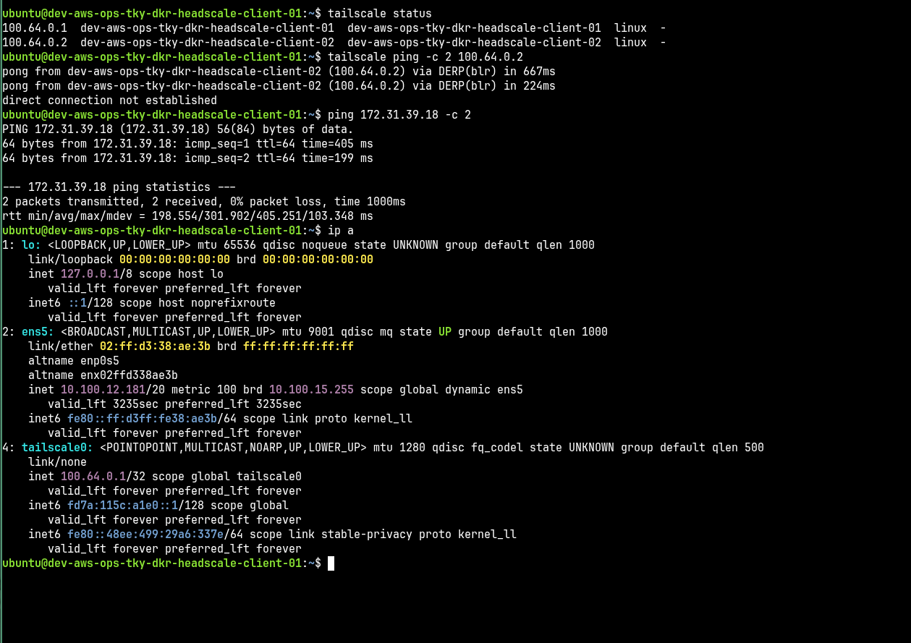
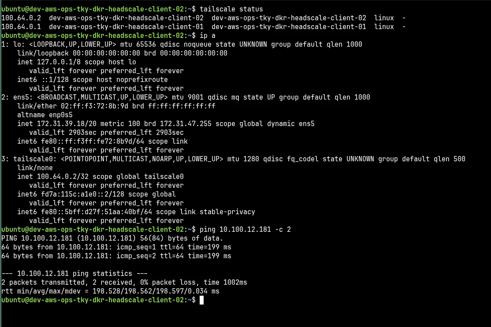

How to Setup Headscale VPN on AWS
15th September 2026
Building secure, private networks across isolated cloud environments is a common challenge in modern infrastructure. While AWS offers solutions like VPC peering and Transit Gateway, these can become complex and expensive, especially when connecting resources across multiple AWS accounts, regions, or even different cloud providers.
In this guide, I'll show you how to build a private mesh VPN network using Headscale - a self-hosted, open-source alternative to Tailscale's control server. We'll connect three isolated AWS VPCs across different accounts and regions, coordinated by a self-hosted Headscale control plane, and fully provisioned using Ansible for infrastructure-as-code automation.
This architecture demonstrates how Headscale provides a simpler, more cost-effective approach to private networking without the complexity of traditional AWS networking solutions.
Headscale is an open-source, self-hosted implementation of the Tailscale control server. While Tailscale is a commercial SaaS offering that manages your mesh network's control plane, Headscale allows you to run your own control plane infrastructure, giving you complete ownership and control.
Key benefits of Headscale:
Our demo architecture consists of three AWS EC2 instances deployed across different regions and accounts:
| Node | Role | Public IP | Region | VPC CIDR |
|---|---|---|---|---|
headscale-coordination-server |
Control plane | 15.152.149.240 | ap-northeast-3 | - |
headscale-client-01 |
Mesh node / subnet router | 34.237.124.11 | us-east-1 | 10.100.0.0/16 |
headscale-client-02 |
Mesh node / subnet router | 13.207.176.206 | ap-south-1 | 172.31.0.0/16 |
Each client sits in its own VPC and advertises its local CIDR into the mesh network. The coordination server auto-approves these routes for nodes tagged with tag:gateway, so once a client connects, it's immediately reachable across the mesh - no manual route approval needed.

Each client is deployed in a separate VPC, AWS account, and region. Headscale gives them a shared, encrypted overlay network (100.64.0.0/10) without VPC peering or transit gateways. Each node receives a stable mesh IP and can reach the other side's advertised subnet directly through the encrypted WireGuard tunnel.
The entire deployment follows a layered approach using Ansible for infrastructure-as-code automation. This ensures repeatability, version control, and consistent configuration across all nodes.
Our Ansible playbooks are organized into three distinct layers:
# Deploy Headscale coordination server
ansible-playbook -i inventories/dev/hosts.yml playbooks/site.yml --limit role_headscale_server# Deploy Headscale client nodes
ansible-playbook -i inventories/dev/hosts.yml playbooks/site.yml --limit role_headscale_clientUser enrollment and pre-authentication key generation is fully automated through Ansible:
# Generate pre-auth keys for new nodes
ansible-playbook -i inventories/dev/hosts.yml playbooks/headscale_enroll.yml -e headscale_user_generate_preauth_keys=trueThe inventory defines our mesh topology with appropriate tags and groupings:
headscale_users:
- name: dev-aws-ops-tky-dkr-headscale-client-01
tags: [tag:gateway, tag:dev]
- name: dev-aws-ops-tky-dkr-headscale-client-02
tags: [tag:gateway, tag:stg]
dev:
hosts:
dev-aws-ops-tky-net-headscale-coordination-server:
ansible_host: 15.152.149.240
dev-aws-ops-tky-dkr-headscale-client-01:
ansible_host: 34.237.124.11
dev-aws-ops-tky-dkr-headscale-client-02:
ansible_host: 13.207.176.206
role_headscale_server:
hosts:
dev-aws-ops-tky-net-headscale-coordination-server:
role_headscale_client:
hosts:
dev-aws-ops-tky-dkr-headscale-client-01:
dev-aws-ops-tky-dkr-headscale-client-02:
Each client node is configured as a subnet router (gateway) to advertise its VPC CIDR to the mesh network. This configuration is defined in the node's host_vars and pulled from Ansible Vault for sensitive data like authentication keys.
service_headscale_client_router:
hostname: "dev-aws-ops-tky-dkr-headscale-client-01"
auth_key: "{{ vault_headscale_client_1_auth_key }}"
advertise_routes: ["10.100.0.0/16"]
advertise_tags: ["tag:gateway"]
accept_dns: true
accept_routes: true
snat_subnet_routes: true
enable_ipv4_forwarding: true
manage_mss_clamping: trueservice_headscale_client_router:
hostname: "dev-aws-ops-tky-dkr-headscale-client-02"
auth_key: "{{ vault_headscale_client_2_auth_key }}"
advertise_routes: ["172.31.0.0/16"]
advertise_tags: ["tag:gateway"]
accept_dns: true
accept_routes: true
snat_subnet_routes: true
enable_ipv4_forwarding: true
manage_mss_clamping: true
Configuration Highlights:
• advertise_routes: Specifies which CIDR blocks to advertise to the mesh
• advertise_tags: Tags used for ACL policy matching and auto-approval
• snat_subnet_routes: Enables NAT for traffic forwarding
• manage_mss_clamping: Handles MTU issues for proper packet forwarding
Access control in Headscale is policy-driven through ACL definitions written in HuJSON format. These policies are rendered and deployed via Ansible as infrastructure-as-code, ensuring consistent, auditable, and version-controlled access rules.
Our baseline ACL policy includes:
group:admins has full access to all nodes and services (*:*)tag:prod and tag:staging can communicate with each other and defined internal CIDRsroot, ubuntu, or admin is limited to group:admins10.100.0.0/16 and 172.31.0.0/16 are automatically approved for tag:gateway nodes"tagOwners": {
"tag:prod": ["group:admins"],
"tag:staging": ["group:admins"],
"tag:gateway": ["group:admins"]
},
"acls": [
{
"action": "accept",
"src": ["group:admins"],
"dst": ["*:*"]
},
{
"action": "accept",
"src": ["tag:prod", "tag:staging"],
"dst": [
"tag:prod:*",
"tag:staging:*",
"10.0.0.0/16:*",
"172.31.0.0/16:*"
]
},
{
"action": "accept",
"src": ["*"],
"dst": ["*:*"],
"proto": "icmp"
}
],
"autoApprovers": {
"routes": {
"10.100.0.0/16": ["tag:gateway"],
"172.31.0.0/16": ["tag:gateway"]
}
}Note: This policy is a baseline for the demo and is fully configurable. In production environments, you would refine these rules based on specific team and service access requirements. ACL changes can be reloaded without disrupting existing connections.
After making ACL changes, reload the configuration without disrupting active connections:
ansible-playbook -i inventories/dev/hosts.yml playbooks/headscale_reload.ymlOnce the infrastructure is deployed, it's important to verify that all components are functioning correctly and that the mesh network is operational.
On the Headscale coordination server, you can inspect users, nodes, routes, and pre-auth keys:
# List all users
docker exec headscale headscale users list
# List all connected nodes
docker exec headscale headscale nodes list
# List advertised routes
docker exec headscale headscale routes list
# List pre-auth keys
docker exec headscale headscale preauthkeys list
This confirms:
100.64.0.x, fd7a:115c:a1e0::x)On each client node, verify the Tailscale status and test connectivity:
# Check Tailscale status
tailscale status
# Ping peer by mesh IP or hostname
tailscale ping <peer-mesh-ip-or-name>

The verification confirms:
Headscale is an open-source, self-hosted implementation of the Tailscale control server. While Tailscale is a commercial SaaS offering, Headscale allows you to run your own control plane, giving you complete control over your mesh network infrastructure without relying on external services.
Headscale provides a simpler, more cost-effective solution for connecting resources across VPCs, regions, or even cloud providers. Unlike VPC peering or Transit Gateway, Headscale works across different AWS accounts, regions, and even non-AWS environments without complex networking configuration. It also provides encrypted peer-to-peer connections and easier access control through ACL policies.
Subnet routing allows a Headscale node to advertise routes to its local network. When configured as a subnet router (gateway), the node forwards traffic from the mesh network to its local VPC CIDR. With auto-approval policies, nodes tagged appropriately can automatically have their advertised routes approved, enabling seamless connectivity without manual intervention.
Access Control Lists (ACLs) in Headscale define who can access what resources in your mesh network. ACL policies use tags, groups, and users to control traffic flow between nodes. You can specify which nodes can communicate, which protocols are allowed, and which routes should be automatically approved. ACLs are defined in HuJSON format and can be managed as infrastructure-as-code.
Yes, Headscale works seamlessly across AWS accounts, regions, and even different cloud providers. Each node connects to the Headscale coordination server over the internet using encrypted WireGuard tunnels, making it ideal for multi-account, multi-region, or hybrid cloud architectures without requiring VPC peering or complex networking setup.
Headscale deployment with Ansible follows a layered approach: baseline (OS hardening, users, SSH), profile (Docker host setup), and service (Headscale server or client role). Ansible manages the entire lifecycle including node enrollment, pre-auth key generation, route configuration, and ACL policy deployment. All configuration is stored in inventory and host_vars, making it fully repeatable and version-controlled.
The current deployment demonstrates a working Headscale mesh VPN with the following achievements:
Before moving to production, consider the following enhancements:
Headscale provides a powerful, cost-effective alternative to traditional AWS networking solutions for connecting isolated environments. By leveraging WireGuard's modern encryption and Tailscale's mesh networking approach, Headscale enables secure, private networks across AWS accounts, regions, and even cloud providers without the complexity of VPC peering or Transit Gateways.
The infrastructure-as-code approach using Ansible ensures that the entire deployment is repeatable, version-controlled, and auditable. From initial provisioning to ACL management, every aspect of the mesh network can be managed through code, making it ideal for teams practicing DevOps and GitOps methodologies.
Whether you're building a development environment spanning multiple accounts, creating a staging network that mirrors production, or establishing secure connectivity for a hybrid cloud architecture, Headscale offers a flexible and maintainable solution that scales with your infrastructure needs.